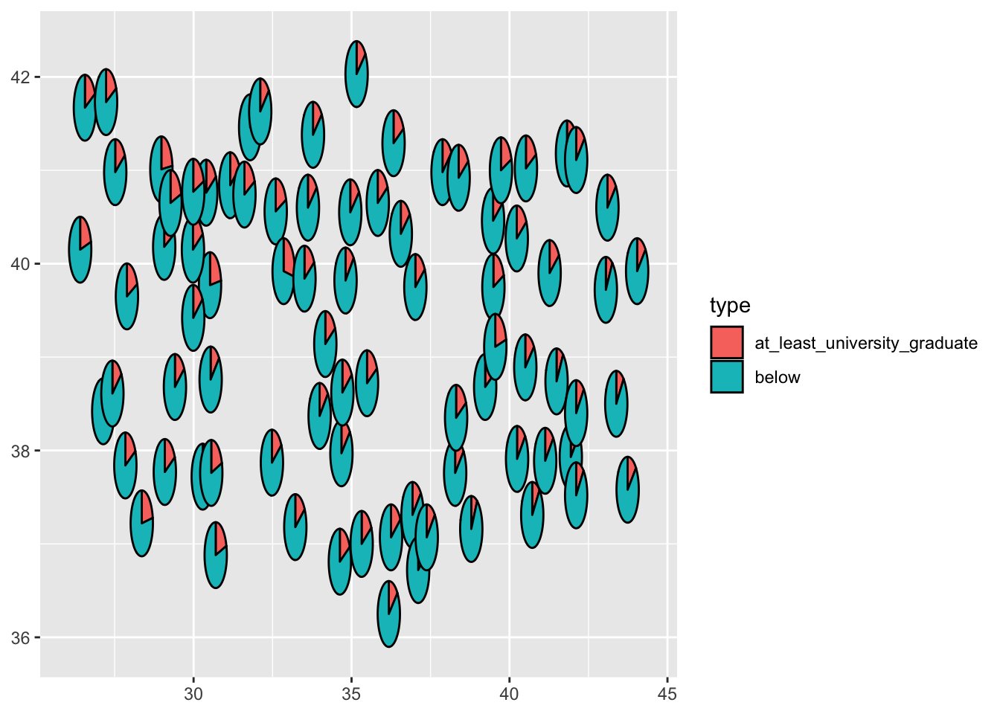
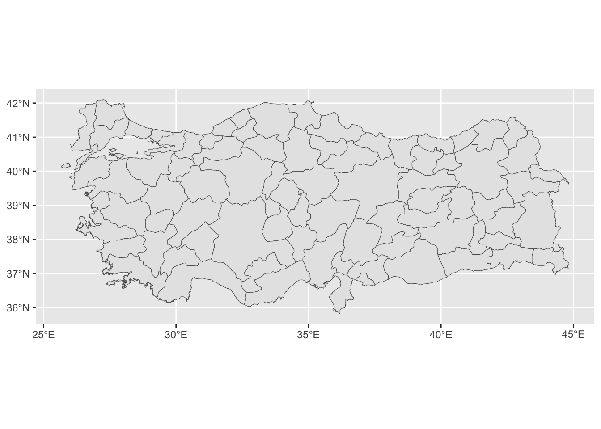
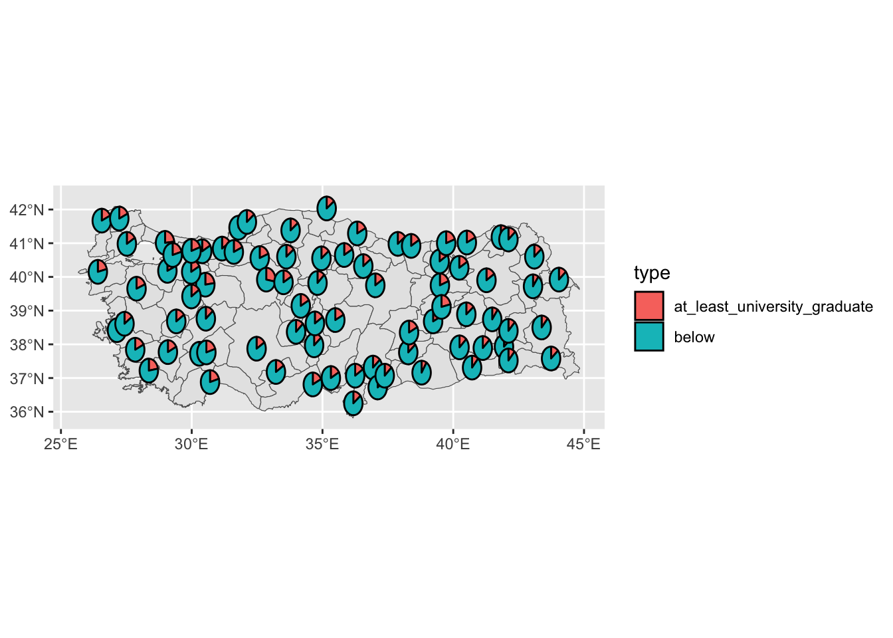
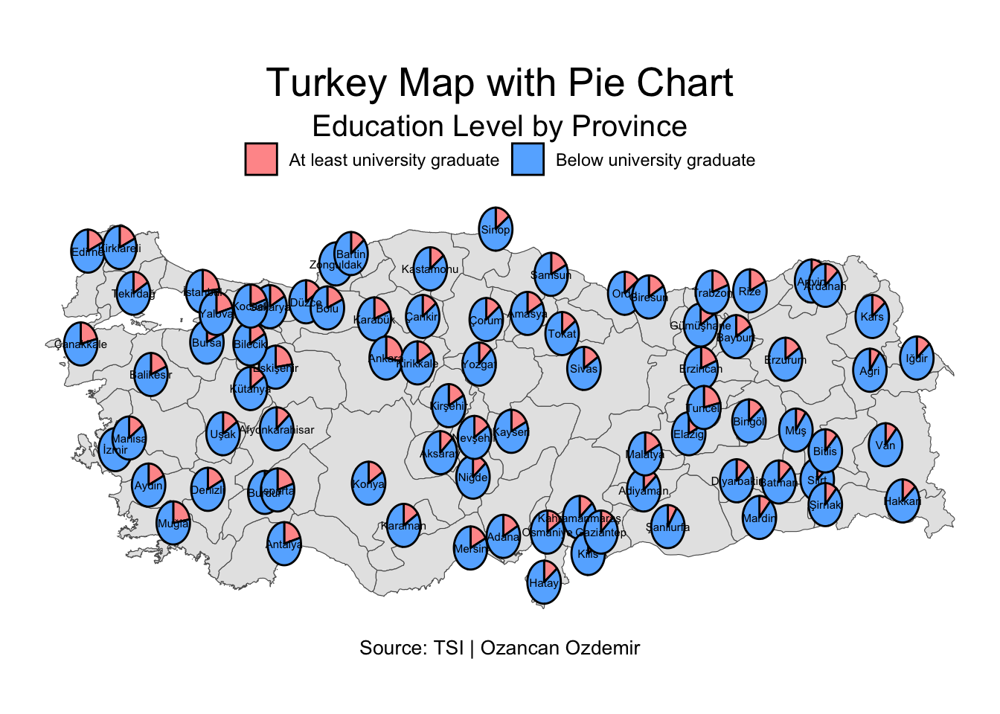

library(ggplot2)
library(sf) # for reading the shapefile
library(scatterpie) # for drawing pie chartsHow to draw a pie chart on map in R with ggplot2 and scatter pie? An example for Turkey
Pie Chart… The unloved boy of visualization family. However, it is getting popularity especially when it is in conjuction with maps. For example, the following chart was publised by to illustrate the vote distribution across the country.
In this post, I’ll show you how you can draw a pie chart on map in R using scatterpie package. You can find out more about the package by looking at its vignette here.
During this tutorial, we particularly go through drawing a pie chart on a Turkey map meanwhile explaining the key steps regarding the package.
If you would like to know how to draw a Turkey map in R, you can visit one of my previous posts here.
The most important point of use the package is the dataset. The dataset you work with should have four key columns to be able to use the package. These columns are:
long: Longitude of the center of the pie chart
lat: Latitude of the center of the pie chart
class1: The first class of the pie chart (in %)
class2: The second class of the pie chart (in %)
radii: The radius of the pie chart (optional)
You can think of the charts produced by this package is a layer where several pie charts are scattered on the axis of latitude and longitude.
First call the libraries.
Let’s consider a dataset tr_data containing province names, corresponding geographical information (lat and long) and two categories for education level by province (at least university graduate or below), which is taken from TSI Turkish Statistical Institute and the data is from 2023.
head(tr_data) il at_least_university_graduate below lat long
1 Adana 16.867601 83.13240 37.00 35.32
2 Adiyaman 13.657282 86.34272 37.76 38.28
3 Afyonkarahisar 13.788480 86.21152 38.76 30.54
4 Agri 9.909207 90.09079 39.72 43.05
5 Aksaray 13.256213 86.74379 38.37 33.99
6 Amasya 17.080516 82.91948 40.65 35.83The following code exactly shows how scatterpie works. The main function there is geom_scatterpie that takes longitude, latitude and category columns as input.
ggplot() + geom_scatterpie(aes(x=long, y=lat), data=tr_data,
cols=c("at_least_university_graduate","below")) 
The scatter plot above basically illustrates the general lines of Turkey map. Now, lets add another layer, which is a Turkey map.
st_data_turkey <- st_read("https://geodata.ucdavis.edu/gadm/gadm4.1/json/gadm41_TUR_1.json")Reading layer `gadm41_TUR_1' from data source
`https://geodata.ucdavis.edu/gadm/gadm4.1/json/gadm41_TUR_1.json'
using driver `GeoJSON'
Simple feature collection with 81 features and 11 fields
Geometry type: MULTIPOLYGON
Dimension: XY
Bounding box: xmin: 25.6651 ymin: 35.8154 xmax: 44.835 ymax: 42.1067
Geodetic CRS: WGS 84head(st_data_turkey)Simple feature collection with 6 features and 11 fields
Geometry type: MULTIPOLYGON
Dimension: XY
Bounding box: xmin: 29.6638 ymin: 36.5385 xmax: 44.4965 ymax: 41.0905
Geodetic CRS: WGS 84
GID_1 GID_0 COUNTRY NAME_1 VARNAME_1 NL_NAME_1 TYPE_1 ENGTYPE_1 CC_1
1 TUR.1_1 TUR Turkey Adana Seyhan NA Il Province NA
2 TUR.2_1 TUR Turkey Adiyaman Adıyaman NA Il Province NA
3 TUR.3_1 TUR Turkey Afyon Afyonkarahisar NA Il Province NA
4 TUR.4_1 TUR Turkey Agri Ağri|Karaköse NA Il Province NA
5 TUR.5_1 TUR Turkey Aksaray NA NA Il Province NA
6 TUR.6_1 TUR Turkey Amasya NA NA Il Province NA
HASC_1 ISO_1 geometry
1 TR.AA TR-01 MULTIPOLYGON (((35.4143 36....
2 TR.AD TR-02 MULTIPOLYGON (((38.1033 37....
3 TR.AF NA MULTIPOLYGON (((30.1946 37....
4 TR.AG TR-04 MULTIPOLYGON (((43.102 39.3...
5 TR.AK TR-68 MULTIPOLYGON (((33.2495 38....
6 TR.AM TR-05 MULTIPOLYGON (((35.3708 40....The code chunk below shows how to draw a map of Turkey using the sf package.
ggplot(data = st_data_turkey) +geom_sf()
We have all ingredients now! Let’s combine the map and pie chart together.
ggplot(data = st_data_turkey) +geom_sf()+ geom_scatterpie(aes(x=long, y=lat), data=tr_data,
cols=c("at_least_university_graduate","below")) 
Instead of combining these two functions using two separate data, you can also combine geodata of Turkey and tr_data by province name, and proceed with that data as well.
After this footnote, we can customise the plot by adding some labels and changing the theme. We can edit colors in pie chart and legend labels using scale_fill_manual.
We can change the theme of the map using theme_void() and theme() functions.
We can add province names to the map using geom_text() function.
ggplot(data = st_data_turkey) +geom_sf()+ geom_scatterpie(aes(x=long, y=lat), data=tr_data,
cols=c("at_least_university_graduate","below")) + scale_fill_manual(values = c("#FF9999", "#66B3FF"),labels = c("At least university graduate", "Below university graduate")) +
labs(title = "Turkey Map with Pie Chart",
subtitle = "Education Level by Province",
caption = "Source: TSI | Ozancan Ozdemir") +
theme_void() + geom_text(aes(x=long, y=lat, label=il), data=tr_data, size=2, color="black") +
theme(plot.title = element_text(hjust = 0.5, size = 20),
plot.subtitle = element_text(hjust = 0.5, size = 15),
plot.caption = element_text(hjust = 0.5, size = 10),
legend.position = "top",
legend.title = element_blank())
For more question and comments, please feel free to reach out to me via e-mail.